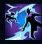
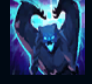
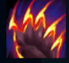
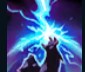
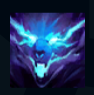

Volibear
| Volibear The Relentless Storm | |
|---|---|
| Release date | 29.11.2011 |
| Class | Juggernaut |
| Positions | Top,Jungle |
| Resource | Mana |
| Range type | Melee |
| Adaptive type | Physical |
| Base statistics | |||
| Health | 580 – 2110 | Mana | 350 – 1540 |
| Health regen. | 9 – 21.75 |
Mana regen. | 6.25 – 14.75 |
| Armor | 31 – 99 | Attack damage | 60 – 111 |
| Magic resist. | 32 – 53.25 | Crit. damage | 175% |
| Move. speed | 340 | Attack range | 150 |
Pentru cei care încă-l venerează, Volibear este întruchiparea furtunii. Sălbatic, cu o voință de neclintit și o putere formidabilă, Volibear a existat cu mult înainte ca muritorii să ajungă în tundra Freljordului și a jurat să apere tărâmurile pe care le crease împreună cu ceilalți semi-zei. Urăște evoluția civilizației, despre care crede că a făcut oamenii slabi și neputincioși, și luptă pentru a reda tărâmul vechilor datini, de pe vremea când șiroaiele de sânge udau pământul, sfâșiind cu ghearele și colții pe oricine i se împotrivește. |  |
FURTUNA NEMILOASĂ Atacurile și abilitățile lui Volibear îi oferă viteză de atac și, în cele din urmă, atacurile sale le vor provoca daune magice bonus inamicilor din apropiere. |
||
|---|---|---|---|---|
 |
LOVITURĂ ASURZITOARE Volibear primește viteză de mișcare când se îndreaptă spre inamici, amețindu-l și provocându-i daune primului pe care îl lovește. |
|||
 |
SFÂȘIERE FURIBUNDĂ Volibear îi provoacă daune unui inamic, aplicându-i efecte la impact și însemnându-l. Refolosirea acestei abilități asupra aceleiași ținte îi va provoca daune bonus și îl va vindeca pe Volibear. |
|||
|  |
DESPICAREA CERULUI Volibear invocă un fulger într-o locație, provocând daune și încetinind inamicii din apropiere. Dacă se află în raza exploziei, Volibear primește un scut. |
|||
 |
ÎNTRUPAREA FURTUNII Volibear sare într-o locație-țintă, încetinind inamicii de sub el, provocându-le daune și primind viață bonus. Turnurile inamice din apropierea locației sale de aterizare sunt dezactivate temporar. |